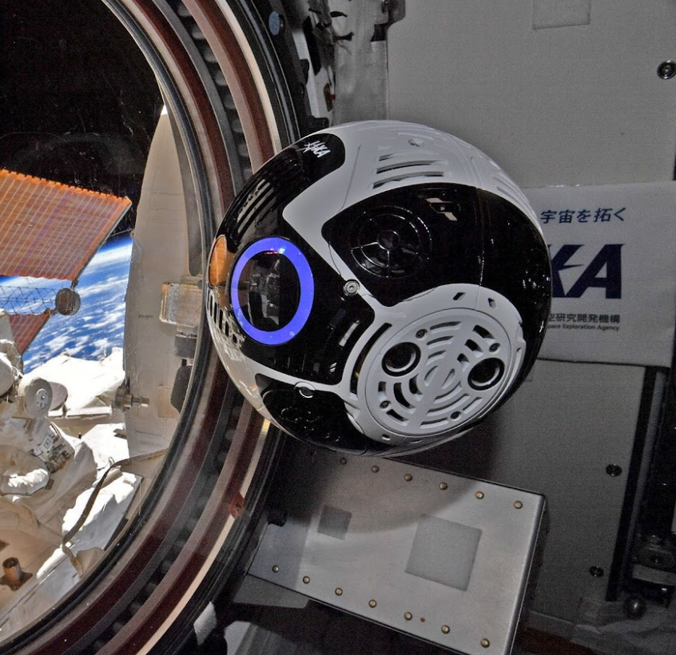
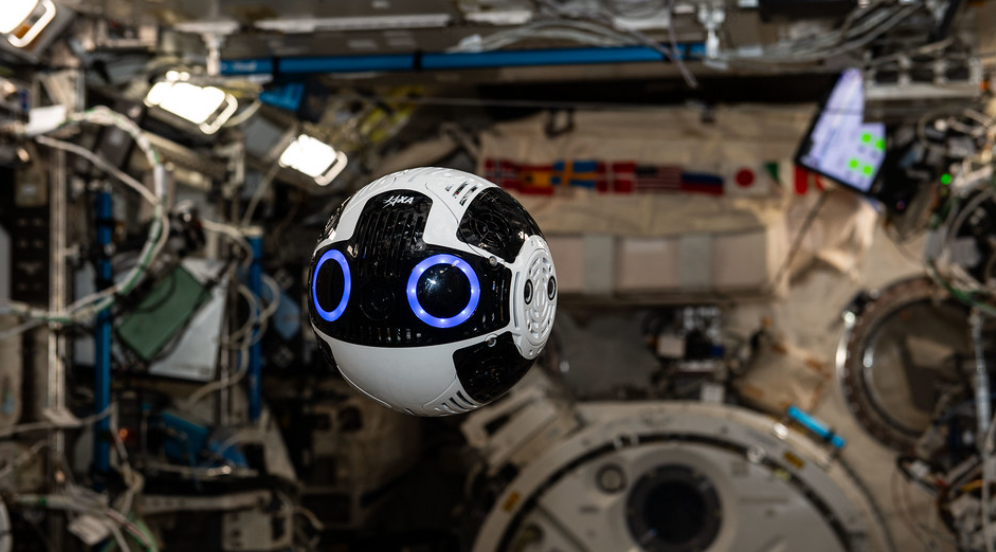

{{t.back}}
中文
EN
{{t.kicker}}
{{t.title}}
{{t.titleSub}}
{{t.intro}}
{{t.tag}}
STARNING
{{t.status}}

TARGET Int-Ball2
MODULE JEM / KIBO
{{t.tagCam}}
{{t.tagFan}}
{{t.credit}}
{{m.code}}
{{m.k}}
{{m.v}}

FREE-FLYING · MICROGRAVITY
{{t.credit}}
{{t.robotK}}
{{t.robotH}}
{{t.robotP}}
{{sp.k}}
{{sp.v}}
{{t.ruleK}}
{{t.ruleH}}
{{ru.big}}
{{ru.k}}
{{ru.v}}
{{t.simK}}
{{t.simH}}
{{t.simP}}
{{t.simOpen}}
{{t.simNote}}
{{t.logK}}
{{t.logH}}
{{s.n}}
{{s.h}}
{{s.p}}
{{t.photoTodo}}
{{t.nextK}}
{{t.nextV}}
→